|
MANCHETE
DO EPISDIO
Piloto de muita ao apresenta primeiro
contato entre humanos e Klingons
Prximo
episdio
Sinopse:
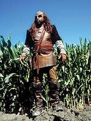 Um
Klingon perseguido por dois Sulibans at se acidentar com sua
nave em uma plantao de milho em Broken Bow, Oklahoma. Aps uma
perseguio frentica, o guerreiro Klaang consegue eliminar seus
perseguidores, mas logo depois ferido pelo fazendeiro Moore, o
dono da plantao, que se assustou com a agressividade do
extraterrestre ( a primeira vez que um humano encontra um Klingon).
O guerreiro encaminhado Frota
Estelar, e enquanto os representantes Vulcanos na Terra estabelecem
contato com Qo'noS, o planeta-natal Klingon, a fim de acertar a
devoluo de seu semelhante, o almirante Forrest convoca o capito
Jonathan Archer, que estava fazendo uma inspeo na nova
Enterprise, NX-01. Projetada por Henry Archer, o pai de Jonathan, e
Zefram Cochrane, trata-se da nave mais avanada j construda por
humanos --a primeira com capacidade interestelar efetiva.
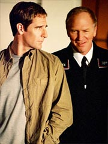 Archer
chega e se encontra com Forrest, seu imediato (o almirante Leonard)
e seu auxiliar (o comandante Williams), alm dos Vulcanos Soval,
Tos e T'Pol. Os Vulcanos pretendem desligar o Klingon dos mecanismos
de suporte de vida e levar o cadver de volta a Qo'noS, mas o capito
da Enterprise fica revoltado. Ele prope a Forrest um plano
alternativo, em que sua nave teria o lanamento adiantado em trs
semanas e faria imediatamente a misso, entregando Klaang vivo aos
Klingons.
Forrest autoriza os planos, apesar dos
protestos Vulcanos, e Archer convoca sua tripulao s pressas.
Enquanto ele vai at o Brasil convencer a linguista Hoshi Sato a se
unir nave, os Vulcanos negociam a disponibilizao de mapas
estelares em troca de uma posio para um de seus oficiais na
nave, como primeiro-oficial. T'Pol designada para o posto, mas
apenas para os oito dias que a misso est prevista para durar.
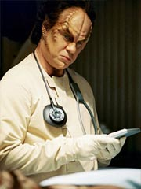 Para
a posio de oficial mdico-chefe, Archer convida Phlox, um
extraterrestre que est na Terra pelo Programa de Intercmbio Mdico
propiciado pelos Vulcanos. O aliengena um dos poucos que j
est familiarizado com a anatomia Klingon.
A Enterprise parte, mas abordada no
meio do caminho por Sulibans, que acabam sequestrando Klaang. Esses
aliengenas so comandados por Silik, que por sua vez recebe
ordens de um misterioso ser do futuro distante, que os est usando
para criar uma guerra fria temporal. Em troca de sua cooperao,
os Sulibans esto recebendo tecnologia avanada, ainda
desconhecida no sculo 22. Entre os avanos, tcnicas elaboradas
de alterao por engenharia gentica. Esses Sulibans foram
modificados geneticamente e possuem habilidades especiais.
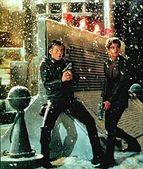 Na
tentativa de descobrir o paradeiro do Klingon, a Enterprise vai at
Rigel 10, a ltima parada de Klaang antes de atingir a Terra.
Enquanto isso, os Sulibans tentam descobrir o que Klaang est
levando de volta para seu povo. O Klingon nada revela sobre sua misso,
mas diz que foi a Rigel 10 se encontrar com Sarin, uma membro do
Suliban que se rebelou contra a poltica vigente entre seus pares.
Por conta disso, a tripulao da
Enterprise volta a se encontrar com os Suliban no planeta. Aps uma
troca de tiros, Archer ferido, e fiac impossibilitado de
permanecer no comando. T'Pol assume e pretende levar a Enterprise de
volta Terra, mas convencida pelo engenheiro-chefe Tucker a
permanecer investigando, seguindo o plano anteriormente traado por
Archer.
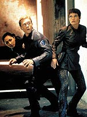 Trabalhando
juntos, T'Pol e Tucker conseguem detectar o trao de dobra deixado
pelas naves Sulibans e descobrem que o quartel-general dos aliengenas
est localizado no interior de um planeta gigante gasoso. A
Enterprise ruma para l, mas se mostra ineficiente no confronto com
as naves Sulibans. Usando uma estratgia criativa, Archer e cia.
sequestram uma nave inimiga. Tucker e seu capito vo a bordo e a
utilizam para ir at a central Suliban.
Uma vez l dentro, eles resgatam
Klaang, que levado por Tucker at a Enterprise. Enquanto isso,
Archer fica no complexo para instalar um neutralizador magntico
que induzir o desacoplamento de todos os mdulos que formam a
base inimiga. Com o sucesso da estratgia entretanto, o capito
fica isolado na poro central da estao Suliban. Ele acaba
descobrindo a cmara temporal que Silik usa para falar com o ser do
futuro distante. Silik e Archer tm um combate corpo-a-corpo, e
quando o Suliban est para pr fim vida do capito, Tucker
utiliza o teletransporte para traz-lo de volta Enterprise.
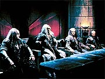 O
teleporte tem sucesso e Archer ordena que a nave dispare para Qo'noS,
onde eles entregam o Klingon. Na cmara do Conselho, revelado
que Klaang transportava informaes tticas sobre os Sulibans
codificadas no prprio cdigo gentico de suas clulas sanguneas.
A Enterprise declara a misso encerrada e faz os preparativos para
voltar Terra, mas o almirante Forrest comunica a Archer que eles
podem prosseguir com a misso exploratria.
Aps chegarem a um entendimento,
Archer pede para que T'Pol permanea bordo como oficial de cincias
e primeiro-oficial da nave. Phlox tambm decide ficar, para seguir
com seus estudos da espcie humana com a tripulao da Enterprise.
Comentrios:
"Isso no vai ser a Jornada nas Estrelas do
seu pai." Foi assim que Rick Berman definiu a srie Enterprise,
antes mesmo de divulgar a premissa do programa. E, de fato, foi o
que os produtores conseguiram realizar, pelo menos no piloto, "Broken
Bow".
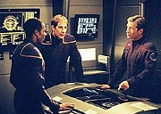 No s
temos um estilo bastante diferente das sries anteriores em termos
visuais, como tambm no aspecto narrativo. O piloto no se
preocupa em desenvolver os personagens, mas os mostra de uma forma j
suficientemente amadurecida, de forma que os tripulantes que no
foram enfocados proeminentemente na histria no passem audincia
uma sensao de indiferena.
Alm disso, a
estratgia de criar uma srie com personagens mais contemporneos
facilita muito o trabalho de elabor-los de forma verossmil,
fazendo com que o telespectador se identifique com eles de maneira
quase imediata. A empatia gerada por esse procedimento seguramente
trabalha para a srie. Dificilmente encontraremos em Enterprise
personagens que dizem to pouco audincia quanto um "Harry
Kim" ou um "Chakotay" diziam em Voyager.
Eliminando essa preocupao maior do caminho, a de que talvez
Brannon Braga fosse incapaz de engendrar personagens minimamente
interessantes, entramos na melhor parte do episdio: o enredo.
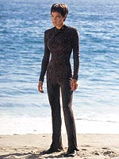 A histria
de "Broken Bow" quase boba de to simples. Um
Klingon cai na Terra e precisa ser levado de volta. Uns "bad
guys" o querem. A misso: lev-lo em segurana a Qo'noS.
difcil cair em algum srio furo de roteiro quando se parte de uma
premissa to simples.
Por outro lado, simples no quer dizer ruim. Muito ao contrrio, o
episdio executado de forma magnfica, introduzindo de uma s
vez vrios dos elementos que com certeza faro parte do repertrio
da srie. O primeiro deles um arco mais ou menos contnuo entre
alguns episdios, apesar da tendncia proeminentemente episdica
da srie.
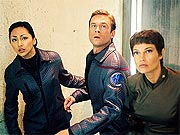 A tal da
"guerra fria temporal" no s uma desculpa para criar
uma histria contnua para Enterprise, como tambm a idia
mais original que surgiu sobre o desgastado tema de viagens no tempo
nos ltimos anos, quer seja dentro ou fora de Jornada. Da
forma como foi executado, esse elemento da trama no d muitas
margens (pelo menos por enquanto) a um reset button, nem d a
entender que a cronologia da srie esteja sendo radicalmente
alterada. Como a interferncia direta do ser do futuro bastante
restrita, no d para temer uma baguna geral no franchise em razo
de sua participao at aqui.
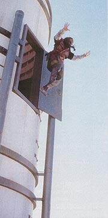 Com os
temores mais fortes dos fs afastados, resta-nos apenas todo o
suspense e a tenso de encarar um inimigo cujo poder de fogo
francamente superior. O ser do futuro um oponente interessante no
pela sua caracterizao, mas pela profunda aura de mistrio que
existe em torno dele. No muito arriscado apostar que ele ainda
oferecer grandes e interessantes desdobramentos para a srie, aguando
cada vez mais a audincia.
Quanto aos inimigos diretos da Enterprise, os Sulibans, tudo que se
pode dizer que eles esto muito bem caracterizados enquanto raa.
A produo felizmente conseguiu desenvolver uma maquiagem
razoavelmente diferenciada do que nos acostumamos a ver nas outras sries
(as tradicionais "testas" de Westmore), e as habilidades
especiais dos aliengenas, turbinadas por imagens geradas por
computador de qualidade impressionante, so para atiar o mais estico
dos fs. A primeira demonstrao, o Suliban que passa por baixo
de uma porta, s o comeo. As cenas mais impressionantes
mostram esses aliengenas andando pelo teto e pela parede de um dos
corredores da Enterprise, e Silik mostra toda sua habilidade ao
contorcer o brao de forma inacreditvel de forma a agarrar a
arma.
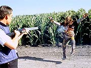 Se os Sulibans esto
mais interessantes do que nunca, o prprio Silik no impe muito
respeito. Ele parece totalmente estpido em alguns momentos, como o
em que pede ao ser do futuro que restaure a vida de seu amigo morto
ou ainda quando ele d disparos sucessivos com uma pistola dentro
da cmara temporal, o que s resulta em um efeito rebote que faz
com que a onda de choque atinja ele mesmo. Aparentemente, seu papel
no passa de mero fantoche para que o todo-poderoso ser do futuro
jogue seu xadrez temporal interestelar.
Apesar da caracterizao fraca, alguns momentos ainda transparecem
um certo brilho, um ar de "cientista louco", cujo ego
maior que tudo e o desprezo por formas de vida "no-engenheiradas"
flagrante. Esses poucos flashes de inspirao ainda podem salv-lo,
se ganharem mais nfase em episdios futuros.
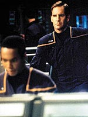 Agora,
se for preciso definir a qualidade do episdio em duas palavras,
elas certamente seriam "Scott Bakula". O ator simplesmente
demonstra por que ele era a principal pea envolvida no sucesso de Enterprise.
Sua atuao d um brilho especial ao personagem do capito, o nico
que realmente recebe um tratamento especial no episdio.
Jolene Blalock uma grata surpresa como T'Pol, mostrando no s
sua extraordinria beleza como tambm um grande potencial para
interpretar uma Vulcana sem cair no tdio exalado por Tim Russ como
Tuvok. Possivelmente sua personagem ser a que mais vai se
aproximar de Spock, o sonho de qualquer aspirante a Vulcano que se
preze.
Os demais todos demonstram grande potencial para episdios futuros.
Em "Broken Bow", os que mais se destacam no segundo
time so Charlie Tucker (Connor Trinneer) e Hoshi Sato (Linda Park).
'Trip', como o engenheiro conhecido entre seus amigos, um belo
contraponto para T'Pol, e guarda muita semelhana com McCoy em seu
temperamento e em seu relacionamento com o capito Archer.
Entretanto, ele no uma cpia carbono do cirurgio clssico:
seu temperamento claramente mais explosivo. Enquanto McCoy
gostava de criticar enfaticamente, Tucker parece ser um pouco mais
primitivo, traduzindo esse estilo verbal em aes. Em vrios
momentos do piloto voc imagina que o engenheiro est a ponto de
acertar um murro em algum (normalmente, T'Pol).
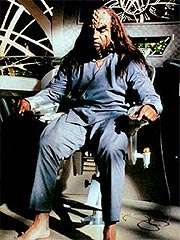 Alis, desde j
uma relao estranha comea a se desenvolver entre a Vulcana e
Tucker, que tambm diferente da que existia entre Spock e McCoy.
Agora, alm de a oposio entre os dois ser muito mais agressiva,
existe uma tenso sexual latente entre os dois. A to criticada
cena da descontaminao, em que um precisa passar gel no outro,
apenas um dos momentos em que isso se manifesta no piloto (Tucker
acariciando as pontas das orelhas de T'Pol especialmente
interessante), e seguramente esse gancho pode oferecer um belo incio
para futuros desenvolvimentos dos dois personagens. Essa sugesto
sexual sutil ficou muito mais por conta dos atores do que do roteiro
em si, deixando no ar a questo: ser que os produtores vo levar
esse bnus inesperado adiante?
Hoshi Sato sem dvida uma grata surpresa. Ela no s ganhou um
status muito mais importante do que meramente abrir e fechar
comunicaes, como fazia Uhura na Srie Clssica, como
tambm cumpre um papel importantssimo na srie --ela
provavelmente o personagem com quem o pblico mais conseguir se
relacionar. Suas atitudes muito humanas diante dos mistrios do
espao seguramente sero parecidos com o da audincia em geral.
E, apesar do medo e do nervosismo da personagem (muito bem
interpretados por Park), ningum pense que Sato no tem fora.
Seus confrontos com T'Pol so especialmente interessantes nesse
sentido.
Os mais negligenciados so o piloto, Travis Mayweather (Anthony
Montgomery), o dr. Phlox (John Billingsley) e o oficial de
armamentos Malcolm Reed (Dominic Keating). Mesmo assim, os dois ltimos
ainda possuem bons momentos, ainda que sutis. divertidssimo,
por exemplo, ver Reed reagir com interesse s comedoras de
borboletas de Rigel. Phlox seguramente tem potencial para ser mais
que uma cpia de Neelix (por "Neelix" entenda "o
aliengena engraadinho, porm intil da srie), embora por ora
o caminho a ser seguido pelos produtores para torn-lo mais que um
alvio cmico ainda no esteja suficientemente claro.
Mayweather talvez seja o caso mais grave dos trs. A cena dedicada
especialmente a ele, em que Travis revela a Tucker um ponto da nave
em que no h gravidade artificial, no transparece nada de muito
especial com relao ao personagem. Talvez mais tarde os
produtores consigam histrias que o tornem mais interessante, mas
por ora sem dvida o menos desenvolvido dos sete.
E no so s os personagens cativantes que marcam essa nova gerao
do franchise em seu piloto --"Broken Bow" tambm
demonstra o novo estilo de fazer Jornada. Em primeiro lugar,
j possvel notar que a tecnobaboseira foi para segundo plano.
Ela est l, claro, mas ela no resolve problemas especficos do
roteiro. Seu uso est predominantemente ligado criao de
conflito entre os personagens, o que positivo do ponto de vista
dramtico. No espere ver reajustes de feixes de partculas que
resolvam o problema no ltimo instante, mas espere para ver os
tripulantes brigando sobre a necessidade de fazer um ajuste ou
outro.
Alm do mais, a tecnologia como um todo est recebendo um enfoque
diferenciado. Tanto de forma direta, com Malcolm Reed e Jonathan
Archer ecoando toda a sua apreciao pelo teletransporte, como de
forma indireta --em certo momento, vemos a Enterprise entrando em
combate com os Sulibans. A nave faz vrios disparos, mas nenhum
deles consegue atingir uma nave inimiga! Visitas a planetas, s com
shuttles! Quando veramos algo do tipo no sculo 24?
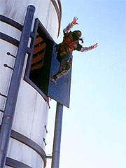 Apesar
da abordagem diferenciada, os produtores souberam dosar na medida
certa elementos que trouxessem um senso de nostalgia aos fs. um
prazer ouvir portas que faam os rudos da Srie Clssica,
ou ainda a volta dos comunicadores "flip", com direito ao
mesmo barulho usado no seriado original. O visual do planeta Klingon,
por exemplo, compensa pelo uso da maquiagem moderna: as construes
tm uma aparncia no melhor estilo da cultura do conquistador Gngis
Khan (que por sua vez lembra muito os Klingons da srie original).
Os dilogos esto bastante afiados, na medida certa para mostrar
que estamos em um sculo diferente, em que as coisas so mais difceis
para os humanos, mas sem depreciar a capacidade de superao da prpria
espcie, mantendo, em certa medida, intactos os basties do futuro
da humanidade projetada por Gene Roddenberry.
A direo de James Conway tambm primorosa, embora sem grandes
inovaes. Alguns giros de cmera so interessantes, mas nada
que seja muito mais marcante. O widescreen s faz por melhorar o
acabamento j impressionante do produto final.
Em termos musicais que encontramos a menor diferenciao entre Enterprise
e as sries anteriores. Em geral, os temas continuam sendo
aquelas msicas de elevador. O momento que musicalmente mais se
destaca, tanto pelo diferencial com relao s outras sries
quanto pela importncia dramtica, o em que Archer decide
perseguir os Sulibans dentro do planeta gigante. O tom de marcha
militar, com direito a percusso, traz uma nova e agradvel sensao
para a cena.
o melhor episdio de Jornada dos ltimos anos?
Certamente. o melhor piloto de Jornada? Talvez.
garantia de uma srie bem-sucedida e capaz de agradar maioria
dos fs? Seguramente no. "Broken Bow" um
excelente comeo, abrindo de forma interessante o estilo episdico
da srie, a proposta "histrica" de revelar o passado de
Jornada e um potencial arco para a continuidade do programa,
mas tudo isso ainda pode cair por terra se os produtores no
conseguirem manter a injeo de criatividade e voltarem s mesmas
frmulas dos seriados anteriores. Mesmo assim, a diverso
garantida. Sente-se e aproveite a carona. "Let's go."
Citaes:
Archer - "Straight
and steady."
("Direto e firme.")
Archer - "Neptune and back in six minutes."
("Netuno ida e volta em seis minutos.")
T'Pol - "This is a foolish mission."
("Essa uma misso tola.")
Archer - "I am not interested in your opinion about this
mission, so why don't you bury your Vulcan cynicism along with your
repressed emotions?"
("No estou interessado em sua opinio sobre essa misso,
ento por que voc no enfia esse seu cinismo Vulcano junto com
suas emoes reprimidas?")
Reed - "There are two settings: stun and kill. It woud be
best no to confuse them."
("H duas configuraes: tontear e matar. Seria melhor no
confundi-las.")
Chanceler Klingon - "ChugDah hegh ...volcha vay."
("ChugDah hegh ...volcha vay.")
Archer - "I'll take that as a 'thank you'."
("Vou receber isso como um 'obrigado'.")
Hoshi - "I don't think they have a word for thank you."
("Eu no acho que eles tenham uma palavra para
obrigado.")
Archer - "What'd he say?"
("O que ele disse?")
Hoshi - "You don't want to know."
("Voc no ia querer saber.")
Trivia:
 As filmagens do piloto
comearam em 14 de maio, com uma semana de atraso, e foram at 19
de junho de 2001. Entre as locaes, estavam o Centro
de Processamento de Esgoto Hyperion, em Los Angeles (22, 23 e 24 de
maio) e a praia Westward, em Malibu (30 de maio).
As filmagens do piloto
comearam em 14 de maio, com uma semana de atraso, e foram at 19
de junho de 2001. Entre as locaes, estavam o Centro
de Processamento de Esgoto Hyperion, em Los Angeles (22, 23 e 24 de
maio) e a praia Westward, em Malibu (30 de maio).
Segundo algumas fontes, o episdio duplo teria consumido, sem
contar os gastos com a montagem dos cenrios fixos da Enterprise,
cerca de US$ 10-15
milhes, fazendo deste o piloto mais caro da histria de Jornada
nas Estrelas.
O episdio o primeiro
de Jornada a ser filmado em cmera digital, ou seja, sem a
existncia de filme ou pelcula para registrar as imagens, que so
registradas diretamente em um disco rgido.
Conhea os personagens
principais do piloto, e veja as homenagens srie original de Jornada,
com os almirantes Forrest (DeForest Kelley) e Leonard (Nimoy) e o
comandante Williams (William Shatner), alm do Vulcano Tos (a
sigla, em ingls, para a Srie Clssica TOS, The
Original Series). Alm deles, o roteirista Ronald D. Moore foi
mencionado, ao dar nome ao fazendeiro que fere o Klingon na Terra.
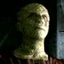 Silik:
Fim dos 30 anos, comeo dos 40. Aliengena. Fisicamente gil. Um
dos lderes dos Sulibans, uma espcie mortal obcecada com
melhoramentos genticos. Nosso vilo. (recorrente)
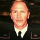
Almirante Forrest: Humano. Entre 50 e 60 anos. Um militar
de carreira que possui o maior posto na Frota. Ele aprecia o capito
Archer e o escolheu pessoalmente para comandar a Enterprise.
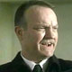 Almirante
Leonard: Humano. Entre 40 e 50 anos. Um oficial de alta
patente na Frota que serve diretamente sob o almirante Forrest.
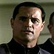 Comandante
Williams: Humano. 50 anos. Um temperamental oficial da
Frota que serve como adido do almirante Forrest.
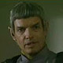 Embaixador
Soval: Vulcano. Entre 60 e 70 anos. Um sbio e arrogante
diplomata que tem pouca pacincia com o capito Archer.
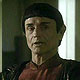 Tos:
Vulcano. 50 anos. Assistente do embaixador Soval. Ele compartilha o
desdm de Soval para com a cultura humana.
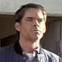 Fazendeiro
Moore: Cerca de 30 anos. O primeiro humano a conhecer (e a
atirar em) um Klingon, o guerreiro Klaang, que irrompeu em sua
plantao enquanto fugia dos Sulibans.
A tradio de ter um personagem
antigo dando a partida em uma nova srie de Jornada
continua. Desta vez Zefram Cochrane (interpretado por James
Cromwell) quem faz uma apario. Ele j havia aparecido no filme "Jornada
nas Estrelas - Primeiro Contato".
Aparentemente, o roteiro e o nome
do episdio foram inspirados por um filme de faroeste dos anos 50,
chamado "Broken Arrow". Outra explicao para o nome, "Broken
Bow", vem do fato de a cidade onde o Klingon se choca se
chamar Broken Bow, no Estado de Oklahoma, EUA.
O episdio se passa principalmente em 2151, mas tem flashbacks de
2121 e uma gravao de Zefram Cochrane feita em 2119.
O produtor-executivo Brannon Braga disse o seguinte do episdio:
"Nosso piloto conta a histria de uma tripulao que se rene
pela primeira vez. A misso simples: um Klingon caiu na Terra
--nunca vimos um Klingon antes-- e os Klingons o querem de volta.
Temos de lev-los para casa ou haver problemas com o Imprio
Klingon. um pouco como 'O Resgate do Soldado Ryan' --levar o
Klingon para casa. No meio do caminho, descobrimos uma grande
conspirao galctica envolvendo uma nova e mortal espcie,
chamada de Suliban."
"Os Suliban", conta Braga, "tm estranhas
habilidades genticas. Eles podem respirar no vcuo do espao e
correr pelos tetos e se camuflar como um polvo. Descobrimos que eles
esto de algum modo em contato com o futuro distante, e que h uma
situao chamada de Guerra Fria Temporal e h uma grande conspirao
que tambm envolve os Klingons. Comeamos a descobrir isso e
uma grande aventura."
Dominic Keating tambm comentou sobre os Sulibans. "Eles podem
passar por qualquer fresta. Voc sabe, eu nunca vi um deles, agora
que parei para pensar nisso. Eu atirei em um 'imaginrio' no
planeta Rigel, enquanto resgatava o capito, mas ele foi adicionado
mais tarde como efeito especial, de modo que eu nunca vi um deles.
Eles tm atores intepretando-os, mas suas habilidades so geradas
por computador."
A maquiagem dos Suliban foi criada pelo mago Michael Westmore, e
mais complicada do que pode parecer a princpio. "Foi
interessante avanar com seu desenvolvimento porque a figura-base
de pesquisa para a pele deles foi uma superfcie gerada por
computador, e tivemos de descobrir como duplicar essa superfcie",
disse Westmore. "H na verdade trs diferentes camadas l. No
so apenas pequenos pontos no topo de alguma coisa, h um baixo
relevo, um mdio relevo e um alto relevo." Brannon Braga
descreve como isso se traduz para a tela e para os personagens.
"Os Suliban tm cavidades de pigmento, como os polvos tm em
sua pele. Isso permite que eles no fiquem totalmente invisveis,
mas peguem a colorao do fundo. uma camuflagem bem imperfeita.
Os Suliban so carecas e tm uma textura bem estranha para a
pele."
Esse o oitavo papel de Vaughn Armstrong em Jornada,
fazendo dele o ator mais verstil do franchise depois de James
Doohan (que, alm de interpretar Scotty, dublou mais de 60
personagens diferentes para a Srie Clssica e a Srie
Animada). Apesar de estar no franchise desde o primeiro ano da Nova
Gerao (1988), Armstrong ganha seu primeiro papel como humano
s agora, interpretando o almirante Forrest. Andes dele ele fez o
Klingon Korris ("Hearf
of Glory", Nova Gerao), o Cardassiano Gul
Danar ("Past
Prologue", Deep Space Nine), o Romulano Telek
R'Mor ("Eye of the
Needle", Voyager), o Cardassiano Seskal (em dois
episdios de Deep Space Nine), o ex-Borg Two of Nine ("Survival
Instinct", Voyager), um capito Vidiian ("Fury",
Voyager), um Hirogen-Alfa ("Flesh and Blood",
Voyager) e o Klingon Korath ("Endgame", Voyager).
Thomas Kopache apareceu em
"The Next Phase", da Nova Gerao, como o
Romulano Mirok, em "Emergence", Nova Gerao,
como um engenheiro, no filme "Generations", como um
oficial de comunicaes, em "The
Thaw", Voyager, como Viorsa, e em dois episdios
de Deep Space Nine, como pai de Kira Nerys, Kira Taban. Em "Broken
Bow" ele faz o Vulcano Tos.
Gary Graham (Soval) tambm
interpretou o Ocampa Tanis, no episdio "Cold
Fire", de Voyager.
O episdio foi musicado
por Dennis McCarthy.
"Broken Bow"
foi a segunda maior audincia da histria da UPN, com 12,5 milhes
de telespectadores. O nico programa que teve audincia superior
foi o piloto de Voyager, "Caretaker",
com 21 milhes.
Linda Park ganhou nas
filmagens da segunda metade deste episdio o apelido de Sushi,
depois que o diretor James Conway, enquanto passava instrues
para coordenar a cena da fuga de Rigel 10, chamou sua personagem,
Hoshi Sato, de Sushi.
A novelizao do episdio
levou menos de uma semana, segundo a escritora Diane Carey. "As
novelizaes normalmente levam duas semanas, embora 'Broken Bow'
tenha sido uma corrida de quatro dias. Eu no quero fazer isso
muitas vezes! Minhas mos ainda doem!"
O papel das danarinas
comedoras de borboletas de Rigel foi o primeiro grande trabalho em
televiso das irms Klimaszewski. "Colocamos nossas
habilidades em todas as diferentes formas de entretenimento. Enterprise
nos d a chance de aumentar ainda mais nossas habilidades, e
estamos felizes que nossos esforos tenham nos levado a partilhar
da histria de Jornada."
Ficha
tcnica:
Escrito por Rick
Berman & Brannon Braga
Direo de James Conway
Exibido em 26/09/2001
Produo: 001
Elenco:
Scott
Bakula como Jonathan Archer
Jolene Blalock como
T'Pol
John Billingsley
como Phlox
Anthony Montgomery
como Travis Mayweather
Connor Trinneer como
Charlie 'Trip' Tucker III
Dominic Keating como
Malcolm Reed
Linda Park como Hoshi Sato
Elenco convidado:
James Cromwell como
Zefram Cochrane (no-creditado)
John Fleck como Silik
Melinda Clarke como Sarin
Tommy 'Tiny' Lister, Jr. como Klaang
Vaughn Armstrong como almirante Forrest
Jim Beaver como almirante Leonard
Mark Moses como Henry Archer
Gary Graham como Soval
Thomas Kopache como Tos
Jim Fitzpatrick como comandante Williams
James Horan como Figura Humanide
Joseph Ruskin como Mdico Suliban
Marty Davis como jovem Jonathan Archer
Van Epperson como aliengena
Ron King como fazendeiro Moore
Peter Henry Schroeder como Chanceler Klingon
Matt Williamson como membro do Conselho Klingon
Byron Thames como tripulante
Ricky Luna como Carlos
Jason Grant Smith como tripulante Fletcher
Chelsea Bond como me aliengena
Ethan Dampf como criana aliengena
Diane Klimaszewski como danarina de borboleta
Elaine Klimaszewski como danarina de borboleta
Prximo
episdio
|